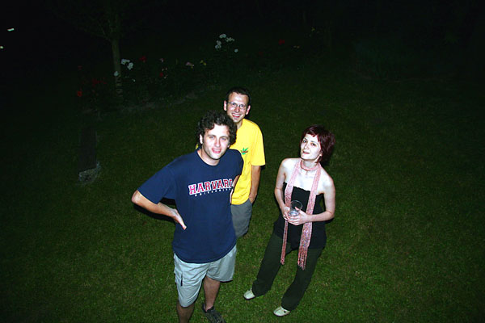

- Yahti.com je porinut 1. maja 2006. godine
- Pre odluke da sajt nazovemo Yahti, imali smo 130 drugih predloga imena
- Prave ga La Lara, Kikoman & Ljube iz Srbije
- U oktobru 2006. učestvovali smo na takmičenju Prix Europa u Berlinu
- Kao inspiracija za dizajn poslužila je jedna rana slika Al Harvardli-ja. On je i kreator serijala «Proleće u Italiji»
- Ovaj sajt koristi Movable Type CMS (Content Management System), hostuje se na Yahoo web hostingu, MT šablone uradio je Ljubar
- Učestvovali smo na blog festivalu Blog Open
- Tekstovi i fotografije u duhu Yahti.com, kao pitanja i komentari, dobrodošli su na kontakt [at] yahti [dot] com

Three of us na TLF Klincijadi 06 (dok smo još mogli stajati, gibati)
 RSS feed
RSS feed
 sadržaji se objavljuju pod
sadržaji se objavljuju pod